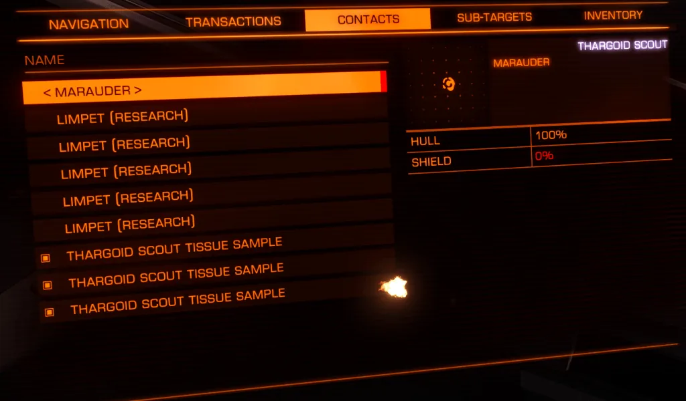

It is possible to obtain tissue samples from the Thargoids using the Research Limpet (availability on eddb). There are several ways to do this, and several ways to find Thargoids to sample from. Interceptor Tissue samples are used in the second Ram Tah mission Decrypting the Guardian Logs.
You can sample from Scouts and Interceptors. Some techniques only work on Interceptors, others will work for all types.
Note: Interceptor response to sampling changed after 4.0 patch 14 and cold sampling no longer works – the interceptors will attempt to attack the samples, and will follow them back to your ship, though it is possible to sample the more peaceful Orthrus successfully.
The Distress Call near Delphi 6 is the best location for interceptor sampling right now. Interceptors can also be found near the attacked Megaships – the one at Electra 6 works well. These will either spawn rescue ships or a random Interceptor Thargoid when you enter. The Thargoid will scan you and then (if you are not carrying anything interesting) scan the cargo in the area. You can also get samples from interceptors in Non Human Signal Sources – but with the addition of scouts into these (plus the number of empty ones) they are not recommended unless you really want to avoid relogging.
Whatever location you choose needs enough cargo present for the Interceptor to scan – they will jump out once everything is scanned.
These can be found in Non Human Signal Sources. Threat 3 has two scouts, Threat 4 has more scouts. Threat 6, 7, 8 will have multiple scouts, and an Interceptor will also appear after some time. We recommend Threat 3 or 4 as they will be simpler. Silent Running and Cold Ship will not work for Scouts as they are too close – use a Combat Ship.
Using all techniques the Research Limpets can fail to return a sample – you can see how many samples you will get by looking on the contacts tab – here is an example where 5 limpets only returned 3 samples:

scout sampling
Using more limpet controllers and sending multiple waves of limpets is recommended. To send multiple waves of limpets you want the Thargoid to stay around – for Interceptors this means choosing locations with lots of things for them to scan, or else dropping extra cargo for them to scoop.
Also note that if the Thargoid completes a scan of you, or notices you after the scan, then it will attack – have a remote system targeted so you can Hi-Wake.
For this technique you need a ship that has as many heatsinks as possible. When the ship is cold the thargoid will ignore you when you while you sample it, so it is safer than some methods. Do not use this method near a star – it will heat your ship up and make you visible faster.
Video: Redden Alt-Mer using Silent Running to sample a Basilisk
For this technique you need a ship that runs at 18% or less heat level (Diamondback Explorer is a good start point, example outfitting). When the ship is cold the thargoid will ignore you while you sample it, so it is safer than some methods. Do not use this method near a star – it will heat your ship up and make you visible.
Video: Factabulous using a cold ship to sample a Cyclops
In this case you don’t worry about the thargoid attacking you – this is more like normal combat – fire the Research Limpet and wait for it to return while attacking (or kiting) the thargoid. You will take damage. Ideally use a wing so that some can sample and others can distract. This is the only technique known for sampling Scouts (though there is no known use for Scout Tissue Samples yet).
Thanks to CMDRs Redden Alt-Mer and JManis for information used in compiling this guide.